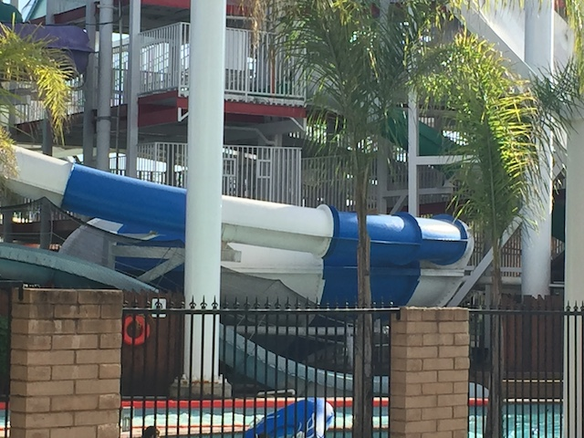
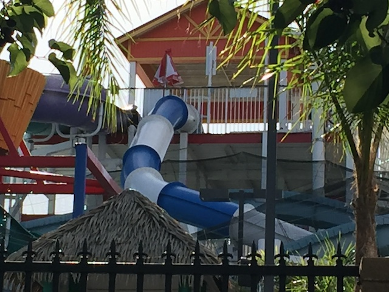

| |
Vortex Review

We're here at SunSplash, where we'll be reveiwing Vortex, the star attraction at Golfland Sunsplash (Roseville). Fun little history fact about this ride. This was actually the first toilet bowl ever. Yep. The first toilet bowl ever made, it was Vortex @ Sunsplash. So that's why the drop looks a little funny (that, and it had to be slightly tweaked so that it fits in the structure). So up the stairs we climb. Once you get to the top of the slide, you just stand there, starring into the blackness of the blue slide, waiting for the signal to go. Once it's clear, we head down the slide. We rapidly accelerate in the dark, as we now know that we have past the point of no return. Then once you fly out into the bowl, we hit the bowl with a loud KER-THUMP!!!!! If you have a fear of getting your back scratched on your local speed slide, then you'll have a problem with Vortex as it is MUCH harder on your back than any other speed slide, but it's SO TOTALLY worth it as you fly around the bowl multiple times at incredible forces. This ladies and gentelmen, this is the TRUE HELIX OF DEATH!!!!!!! Not a fake helix of death like every other helix of death out there. This is THE HELIX OF DEATH!!!! There is NOTHING ELSE LIKE IT!!! =D (Except for the hundreds of Vortex Clones around the world.) After swirling arund and around in the bowl, you simply get flushed out through the hole in the bowl. Now, you can come out in any position. Sometimes, you plop in sitting down, sometimes, your on your side. and sometimes your head first. After plopping in the pool, you swim out until the shallow water where you can get out and get back in line. I'm so happy that these toilet bowls took off, as they are some of my favorite water slides. Get out there and ride it or check out one of its clones very soon.
9/10
Location: Golfland Sunsplash (Roseville)
Opened: 1999
Built by: ProSlide
Last Ridden: July 27, 2024
I have ridden this exact same ride at the following waterparks.
Wild Rivers
Vortex Photos

Home
|